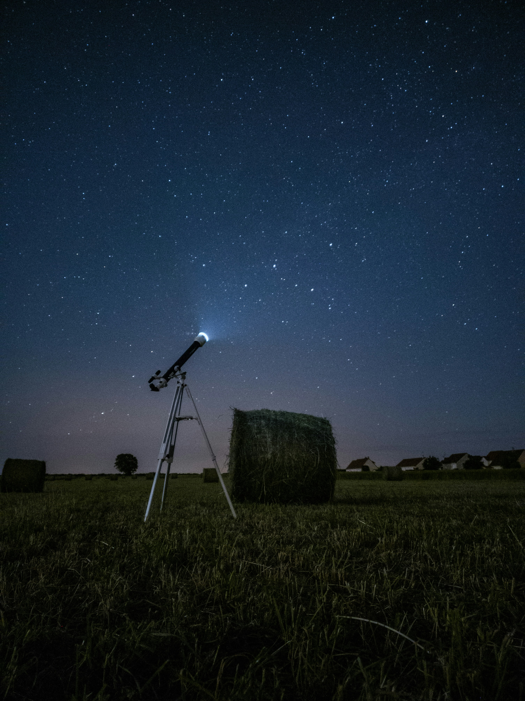
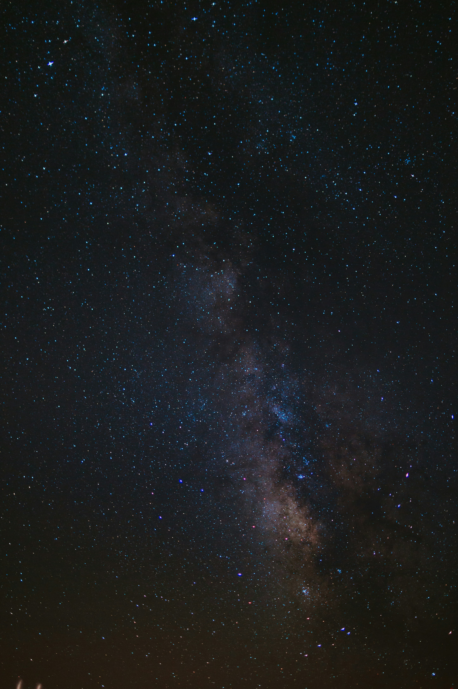

A Origem da Astronomia
Desde a antiguidade, a observação dos astros auxiliou na navegação, na agricultura e na compreensão do tempo. Com a invenção do telescópio no século XVII por Galileu Galilei, a humanidade deu o primeiro grande salto na observação detalhada dos planetas e da Lua.

A Era dos Telescópios Espaciais
Com o lançamento de observatórios fora da atmosfera terrestre, como o Telescópio Espacial Hubble e, mais recentemente, o James Webb, foi possível registrar imagens inéditas de galáxias distantes, nebulosas e a formação de novos sistemas estelares.

A Conquista do Espaço Profundo
Além dos telescópios, as sondas espaciais e missões tripuladas expandiram nossos horizontes para além da órbita terrestre. Da exploração de Marte à chegada aos limites do Sistema Solar, a busca por respostas sobre a origem do universo continua a motivar cientistas em todo o mundo.